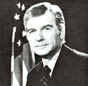

BILL TIMS
Bill Tims wants to change the shape Americans are in . . . because he believes that the general level of fitness in the U.S. is deplorable. He ought to know: Ten years ago the Oklahoman weighed 240 pounds . . . suffered from chronic asthma, bronchitis, and pneumonia . . . and was-in his own words-"fed up with life".
Today, the dynamic man is actively committed to improving other people's physical (and mental) health. An avid practitioner and teacher of macrobiotics-the Oriental discipline which operates on the principle of maintaining a balance of opposites, most often referred to as yin and yang-Bill is also an instructor of physiognomy ("face interpretation") at the Kushi Institute in Boston. There, he practices visual diagnosis, a way of evaluating the patient's health by observing his or her facial features, posture, and bodily structure. He also acts as a private consultant in this field, and has made an educational cassette tape on adopting the macrobiotic way of life.
Through his varied work, Bill hopes to alleviate several problems he sees in the typical American diet: too few whole, unrefined cereal grains, too many animal products (such as meats and dairy foods), and far too much refined sugar. Such a diet not only causes digestive ailments and contributes to the onset of degenerative diseases, he explains, but also alienates people from their environment (since they don't eat anything that isn't far refined from its natural state). By balancing their intake of yang foods (those that are contracting, upsetting) and yin foods (expanding, relaxing), the nutritionist claims, individuals can improve the quality of their blood . . . and enjoy better physical and mental health.
A long-time columnist for the East West Journal, Tims is also an instructor for many of the East West Foundation's workshops and seminars in health, diet, and Oriental medicine. This summer, he will be speaking at the group's week-long "International Program on Macrobiotics and Its Application to Health, Science, and the Arts". - JM.
GEORGE MCROBIE
The publication-in 1973-of E.F. Schumacher's Small Is Beautiful introduced many folks to the value of low-cost, intermediate technology. Now, says George McRobie (a colleague of the late economist, who helped Schumacher found the Intermediate Technology Development Group), small is not only beautiful . . . it's beginning to be popular. And he has the evidence to prove it.
In the recently released Small Is Possible (Harper & Row, $5.95), McRobie presents an inspiring collection of "alternative tech" projects currently under way in the U.S., Canada, and Great Britain. The book-which includes mention of similar activities in Africa, India, and Latin America as well as a worldwide directory of active intermediate technology organizations-catalogs virtually the entire "counter-economy" movement. Originally conceived by Dr. Schumacher himself, the work is intended not only to strengthen the existing network of people practicing alternative lifestyles, but also to inspire others (by concrete example, rather than theoretical argument) to adopt sensible, small-scale technologies.
However, the author cautions that, to accomplish such a change, we must first shatter the myth of "technological determinism" that still prevails in wealthy industrial countries. According to McRobie, believers in that fallacy are almost hypnotized by the energy-gobbling lifestyle to which our society has grown accustomed . . . and are "handicapped by . . . the assumption that we cannot 'afford' technologies focused more on the role of human effort, and therefore must rely on higher and higher capital investment". As a result, McRobie observes, the industrialized countries have now reached the point where "the need for a new approach to technology . . . has be come not a matter of political expediency and intellectual speculation, but a condition of survival".- JM.
SENATOR MARK O. HATFIELD
During the latter part of World War II, Mark Hatfield commanded a Navy landing craft in the Pacific . . . and was among the first military personnel to enter Hiroshima after the atomic bomb was detonated there on August 6, 1945. The devastation and horror that he saw made such a lasting impression on the young man that it later helped to shape his personal and legislative philosophy.
Since coming to Washington, the Oregon lawmaker has worked hard to educate his congressional colleagues and the public about the dangers of nuclear proliferation. "In the short span of three decades since the Hiroshima explosion," he explains, "humanity has created a nuclear arsenal beyond our comprehension. In the United States alone, we now have the technological capability of releasing the equivalent explosive power of 655,000 Hiroshima bombs. That means that in a world of nearly four billion people, we have the capacity to destroy over four hundred billion!"
In an effort to end such irrational stock piling, the senator has been pushing for a moratorium on any further development of nuclear weapons. Instead of the terms specified by SALT II (which he considers a mediocre treaty at best), Hatfield is working for a virtual freeze on deployment of new strategic missiles or bombers, plus a halt in any underground testing of nuclear warheads.
Such a moratorium, he believes, would be easier to regulate than the SALT II treaty would be . . . and also have the advantage of putting an immediate stop to the ever-escalating technological race between the U.S. and the Soviet Union. Furthermore, calling off our own production of nuclear weapons would give us a clear moral base for extending the moratorium to Third World countries. The legislator hopes that if such a freeze can be put into effect, we can even begin to reduce the great weapons arsenal we've already accumulated.
Hatfield, who is serving as chairman of the Senate Appropriations Committee and of the Subcommittee on Energy and Water Development, also has strong words for WIMEX . . . the Pentagon's massive computerized defense system, which has set off a number of "false alarms" in the last year by misinterpreting satellite messages. Such dangerous errors, the senator warns, have placed us close to accidental nuclear war . . . and he has called on the government for a thorough investigation of the warning system.- JM.
IN BRIEF . . .
PAUL and ANNE EHRLICH, MOTHER's Ecoscience columnists, have coauthored a new book entitled Extinction: The Causes and Consequences of the Disappearance of Species (Random House, $14.95).... Actress JOAN HACKETT recently hosted a "Solar Celebration" at her California home, complete with demonstration alcohol-powered cars, a windmill, and lunch cooked in solar ovens. Among the speakers at this summer's Sixth International Congress of Yoga and Holistic Living in New York City was JOHN HOLT, the home-schooling expert who was interviewed in MOTHER NO. 64. . . . Pop singer JIMMY BUFFETT has lent his support to Florida's Save the Manatee Effort, a public service campaign to keep the endangered aquatic mammal from possible extinction.- JM.
|
Photo courtesy of Mark Hatfield |
 |
|